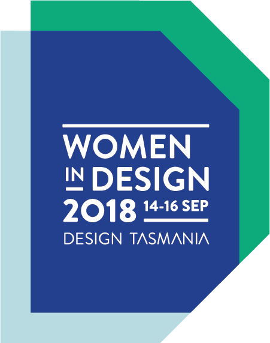

From the absurdist experiments of surrealism to the architecture of the suburban dream home, art and design have long attempted to capture and represent our collective ‘dreams’. Throughout the 20th century, male artist and designers were the predominant ‘dreamers’, designing for women as passive housewife consumers, or objects of sexual fantasy.
DREAMdesign is a social experiment that asks what women in design are dreaming together in 2018, placing women firmly in the driver’s seat as producers, rather than consumers of design. It explores alternative ways our dreams and subconscious can inform collaborative design and design culture. A deeper, more emergent kind of design thinking.
As a participant in Women In Design 2018, you are invited to contribute a dream via our online portal, which identifies and visualizes common themes. We’ll respond to the collective themes in a design outcome to be exhibited at Design Tasmania for the Women in Design colloquium, in conjunction with a discussion and live social dreaming matrix, facilitated by Susan Long, socio-analyst and Director of Research, National Institute of Organisational Dynamics Australia (NIODA).
Everything starts with a dream,
